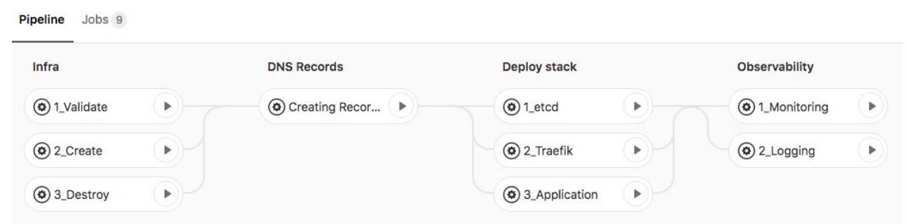
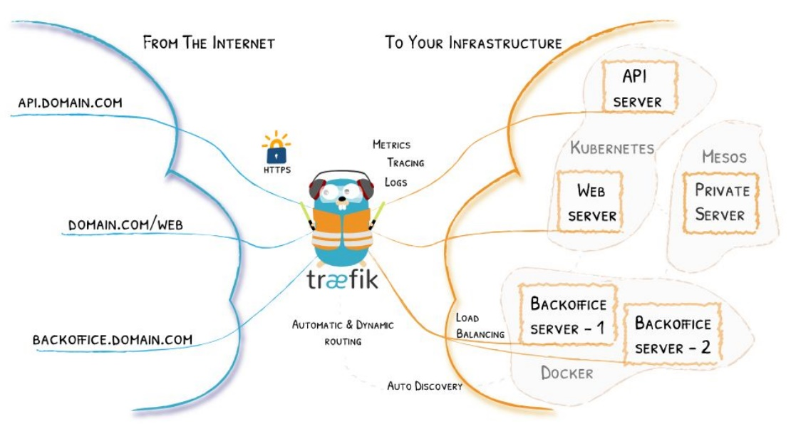

Пример выпускного проекта курса «DevOps практики и инструменты»
Выполнение выпускного проекта предусмотрено в конце курса «DevOps практики и инструменты» в OTUS. Это самостоятельная работа, необходимая для закрепления полученных знаний. Предлагаем вашему вниманию проект балансировщика одного из наших выпускников, Вячеслава Егорова.
Вячеслав создал хорошо задокументированный проект, использующий стек ELK в кластере, Traefik и SSL для обеспечения доступа к сервисам и балансировки нагрузки.
Инфраструктура следующая:
- поднимаются ВМ;
- внутри — docker-swarm-cluster;
- остальное — в виде абстракции Stack в Docker swarm.
Инфраструктура поднимается с помощью Terraform и выполняется в Shared gitlab-runner.
Давайте посмотрим на Pipeline проекта:

А вот принцип работы Traefik:

Обратите внимание, что каждому контейнеру в кластере мы можем назначать label. И если label traefik.enable=true, то traefik найдёт контейнер и будет ждать подключения по адресу, прописанному в label.
deploy:
labels:
- traefik.enable=true
- traefik.basic.frontend.rule=Host:shop.${DOMAIN}
- traefik.basic.port=9090
- traefik.basic.protocol=httpПодробную информацию об особенностях реализации вы можете узнать по ссылке на репозиторий или в презентации.
Проект был рассмотрен преподавательским составом и получил следующие оценки и рекомендации:
1. Преимущества:
- использование Traefik для доступа к сервисам с автоматическим получением сертификатов SSL;
- управление Google DNS при помощи Ansible;
- использование в проекте Docker swarm является и плюсом и минусом одновременно;
- применённое приложение Sockshop в лучших традициях показывает, что такое микросервис;
- решение использовать Swarmprom достаточно логично.
2. Рекомендации:
- постараться разработать и добавить свои метрики и визуализировать их в Grafana;
- разработать CI\CD;
- доработать систему разворота окружения;
- внедрить систему логирования;
- доработать документацию.
Кроме того, были отмечены преимущества инструментария для работы с обратной связью проекта:
- Swarmprom-сборка для мониторинга кластера Docker swarm;
- кластер ELK для логирования, шаблоны для парсинга логов.
Также преподаватели порекомендовали уделить внимание процессу ci\cd, так как оптимальным решением будет вынести мониторинг в другой репозиторий для возможности работы инфраструктурной команды.
Несмотря на несколько рекомендаций, итоговый проект был признан успешным. Студент на практике продемонстрировал полученные знания и расширил своё профессиональное портфолио.